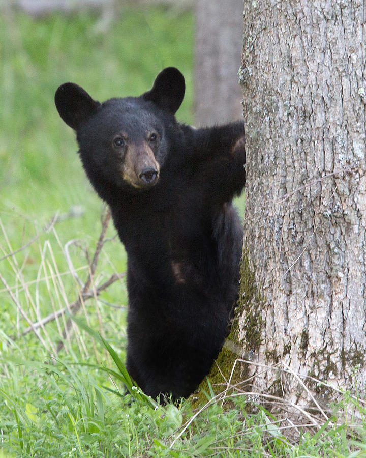
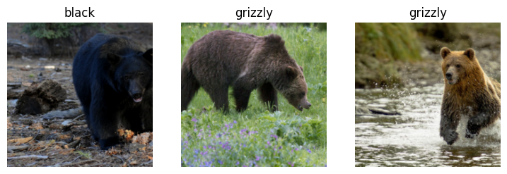
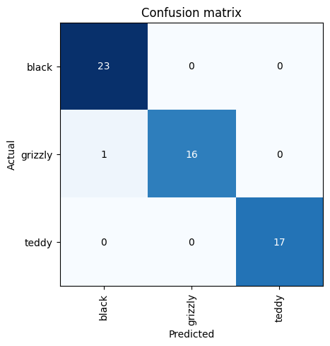
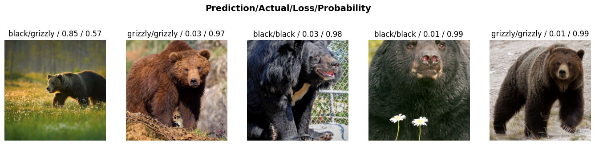

from fastai.vision.all import *Bear Classifier
Bear Classifier
In this notebook, we will use a vision classifer to classfiy bear(teddy, black & grizzly) and deploy the model as web app using huggiface gradio space.
Data
The data is being imported from Kaggle
Dataset - anirudhg15/bears-fastai-2021
from google.colab import userdata
import os
os.environ["KAGGLE_KEY"] = userdata.get('KAGGLE_KEY')
os.environ["KAGGLE_USERNAME"] = userdata.get('KAGGLE_USERNAME')!kaggle datasets download -d anirudhg15/bears-fastai-2021
! unzip "bears-fastai-2021"from pathlib import Pathpath = Path('bears')bl_bear = (path/'black').ls().sorted()
bl_bear[1]Path('bears/black/00000001.jpg')Image.open(bl_bear[1])
DLS function fastai explaination
def get_dls(bs, size):
dblock = DataBlock(blocks=(ImageBlock, CategoryBlock),
get_items=get_image_files,
splitter=RandomSplitter(),
get_y=parent_label,
item_tfms=Resize(size))
return dblock.dataloaders(path, bs=bs)dls = get_dls(64, 224)dls.show_batch(nrows=1, ncols=3)
learn = cnn_learner(dls, resnet18, metrics=error_rate)
learn.fine_tune(4)| epoch | train_loss | valid_loss | error_rate | time |
|---|---|---|---|---|
| 0 | 1.629151 | 0.250812 | 0.122807 | 00:21 |
| epoch | train_loss | valid_loss | error_rate | time |
|---|---|---|---|---|
| 0 | 0.429806 | 0.061032 | 0.017544 | 00:22 |
| 1 | 0.268742 | 0.013778 | 0.000000 | 00:21 |
| 2 | 0.186102 | 0.013141 | 0.000000 | 00:21 |
| 3 | 0.139788 | 0.016549 | 0.017544 | 00:20 |
Interpretting the model
interp = ClassificationInterpretation.from_learner(learn)
interp.plot_confusion_matrix()
interp.plot_top_losses(5, nrows=1, figsize=(17,4))
Prediction
learn.predict('/content/bears/black/00000017.jpg')('black', tensor(0), tensor([9.9993e-01, 1.4458e-06, 7.3126e-05]))Saving the Model
learn.export(fname='bear_model.pkl', pickle_module=pickle, pickle_protocol=2)Reload Model
reload_model=load_learner('bear_model.pkl', cpu=True, pickle_module=pickle)
reload_model<fastai.learner.Learner at 0x7bd9edf06890>reload_model.predict('/content/bears/black/00000017.jpg')('black', tensor(0), tensor([9.9993e-01, 1.4458e-06, 7.3126e-05]))